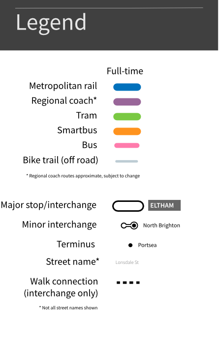

A comprehensive map of Night Network public transport in Greater Melbourne and Geelong. Services operate from 1am to 6am on Fridays, Saturdays and selected public holidays.
View the day network map here.
Download a PDF copy of the Night Network map here.

This is a comprehensive map showing all Night Network public transport routes in Greater Melbourne and Geelong.
It is a version of the main transport map specifically designed to show the Night Network.
You can view the regular network map here.
While PTV has published its own Night Network maps, there is no single map showing the entire network of trains, trams and buses.
Given that trips are not exclusive to any single mode, I thought that coming up with a map to fill this gap might be useful.
There are also several issues with the PTV Night Network map. These include:
Despite this, the new PTV Night Network map is a big improvement on previous ones. It is also one of the few recent maps it has published showing multiple modes across the entire metropolitan area.
As I always say, this is by no means arguing that the PTV maps are useless or that my map is perfect. Both styles of map have advantages and disadvantages. Each is more useful for particular journeys and passengers than others. All that I aim to do with this project is introduce another option for people to use if they wish.
This took me a surprisingly long time. Trains and trams were fairly straightforward, but mapping bus routes was often difficult.
Contrary to the regular map, what took me the most time for this one was figuring out exactly where each individual bus route went.
Yes! While the map is copyright, it is freely available for anyone to use 'as is'.
However, if you wish to modify, sell or otherwise do anything with this map other than use it at face value, please contact me first.
I work with a combination of Affinity Designer and QGIS. Early in my design process of the regular map, I also use old-fashioned whiteboards, paper and pencils.
This map uses Leaflet to render the slippy map.
Probably not.
Because this is a schematic map, the geography of some routes is more distorted than others in the design. For example, in reality, the 606 bus runs in a pretty direct east-west route. But on this map it is shown as bending slightly in ways that don't exactly replicate its geographical route.
This was done to accomodate connecting routes in a way that is easier to read. Other routes, like the 506, are shown pretty much exactly as they are 'on the ground'.
Even if staying 100% true to the geography of a route was possible, it was not be desireable. One of the main purposes of this map is to simplify small diversions and meandering curves to emphasise connections and interchanges rather than exact geographical accuracy. This is where most of the design work has gone.
What is the difference between a 'major' and 'minor' interchange?
I have used the definition described in the other tabs to determine what constitutes a 'major' or 'minor' interchange. While it is somewhat arbitrary, there has to be a point where a line is drawn. It is important to distinguish between the two to maintain the visual hierarchy of the map - one of the main features of this project.
Only routes that terminate or originate at specific locations have been included. Services that stop at an interchange but continue through are not included on these boxes. This was done to reduce visual clutter and make it easier to follow routes from their origin and destination.
I have opted to include only major off-road trails that are signposted and designated. I will also only include routes that serve a connecting function.
The main reason for these design choices is to avoid making the map too busy. There is already a lot of information being displayed and adding every single bicycle route would make the map very difficult to read.
It is also only a secondary purpose of the map. The primary objective is to show public transport routes of Melbourne in one place. Major bike routes compliment this purpose.
Thank you! The preferred method of letting me know is to create a new issue on the Github page.
Otherwise, you can contact me here.
If you have any suggestions, corrections or comments, please let me know here.